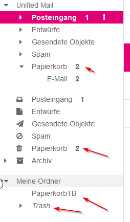

Beim meiner Hauptmailadresse ist der Postkorb defekt und unter "Eigene Ordner" hab ich plötzlich einen Ordner TRASH.
Kann man die Hauptmailadresse ändern/löschen bzw. 
die Mailfilestruktur (Posteingang,Entwurf,Gesendete, Postkorb) auf den Urzustand zurücksetzen und alle anderen privaten Ordner usw. löschen ?
Bei Thunderbird usw. kann ich keine Mails löschen, bringt mir immer einen IMAP Fehler "TRYCREATE".....
Bearbeitet von Manfred9020Hallo @Manfred9020 ,
das sieht ja sehr interessant aus. Hast du bereits eine Neben-E-Mailadresse erstellt? Dann kann man diese als Haupt-E-Mail-Adresse aktivieren und deine bisherige löschen. Das macht allerdings nur unser technischer Support. Melde dich dazu am besten direkt bei unserem Technikteam unter 0676 200 7777. Unsere Kolleginnen und Kollegen kümmern sich dann um alles Weitere. Liebe Grüße, Jonathan
Das hab ich schon vorige Woche gemeldet, wurde an den 2nd Level-Support angeblich weitergegeben. Bis dato warte ich auf ein Feedback.
Welches Mailsystem verwendet ihr eigentlich für Webmail ?
Hi @Manfred9020 , wenn das schon dem 2nd Level gemeldet wurde, gib unseren Kolleginnen und Kollegen bitte etwas Zeit, sich um die Analyse zu kümmern. Danke, LG Karo